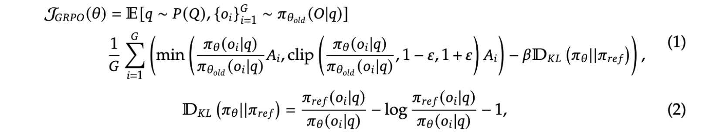

DeepSeek R1 is a large language model developed by DeepSeek AI. It is designed for advanced reasoning tasks, including mathematical problem-solving and coding. Unlike traditional models, DeepSeek R1 combines supervised fine-tuning (SFT) with reinforcement learning (RL) using the Grouped Relative Policy Optimization (GRPO) algorithm. This hybrid approach enables structured reasoning and improved decision-making.
DeepSeek R1M builds upon DeepSeek R1 but introduces:
It also incorporates smaller models like Qwen and Llama.
Instead of using supervised fine-tuning alone, the model learns through reinforcement learning. It adapts its policy through:
Grouped Relative Policy Optimization (GRPO) is a reinforcement learning method designed to stabilize policy updates. The formula for GRPO is:

The A matrix, also known as the advantage function, measures how beneficial an action is compared to the expected value. It is defined as:
\[ A_t = Q(s_t, a_t) - V(s_t) \]
This helps adjust decisions dynamically, optimizing rewards while maintaining stability.
To improve efficiency, DeepSeek R1 uses knowledge distillation, where smaller models learn from larger models, enabling performance retention while reducing computational costs.
A trajectory is a sequence of actions a model has taken. Reinforcement learning updates policies based on successful trajectories, favoring actions that lead to better rewards.
Each log probability in the model is weighted by an advantage term, ensuring better decision-making.
KL divergence is used to measure the difference between probability distributions:
\[ D_{KL}(\pi_{\theta} || \pi_{\text{ref}}) = \frac{\pi_{\text{ref}}(o_i | q)}{\pi_{\theta}(o_i | q)} - \log \frac{\pi_{\text{ref}}(o_i | q)}{\pi_{\theta}(o_i | q)} - 1 \]
This prevents reward hacking and excessive deviation from the reference model.
DeepSeek R1 represents a significant advancement in AI, integrating supervised fine-tuning and reinforcement learning to enhance reasoning capabilities. Its structured training approach enables high-quality responses, making it a powerful model for complex problem-solving.
This is just the beginning of the DeepSeek R1 exploration. Stay tuned for further insights and developments!